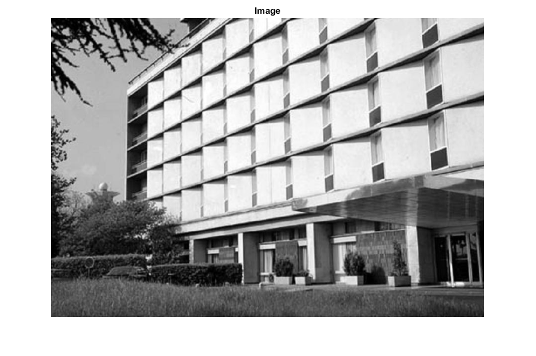
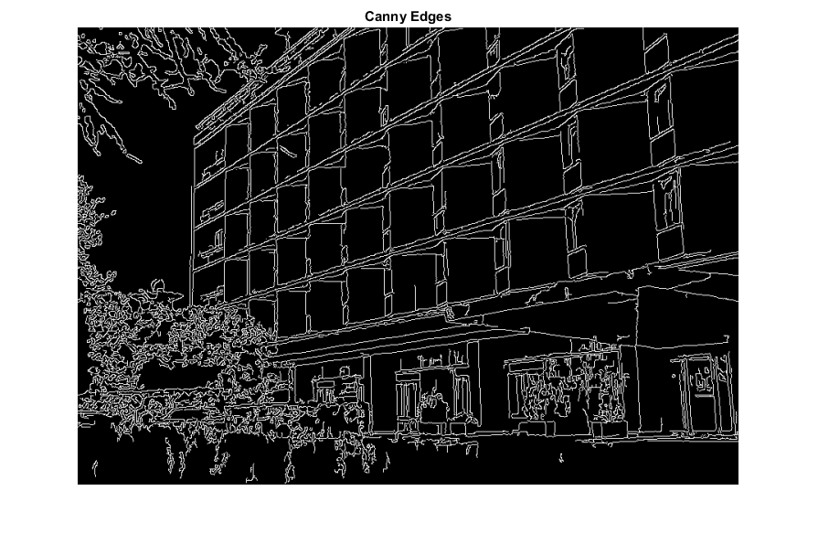
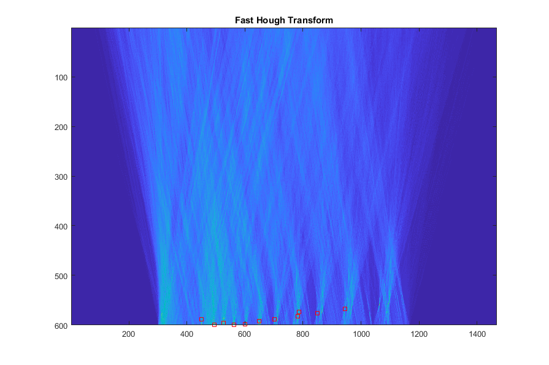
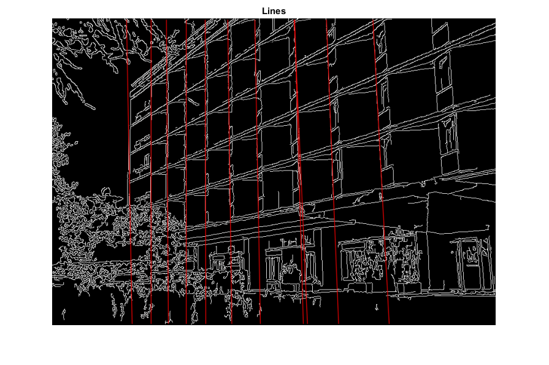

Fast Hough transform demo
This program demonstrates line finding with the Fast Hough transform.
Sources:
Contents
Image
img = cv.imread(fullfile(mexopencv.root(),'test','building.jpg'), 'Grayscale',true); assert(~isempty(img), 'Failed to load image'); scale = min(min([500 1000] ./ size(img)), 1.0); rescale = @(im) cv.resize(im, scale, scale, 'Interpolation','Area'); imshow(rescale(img)), title('Image')
Edges
canny = cv.Canny(img, [50 200], 'ApertureSize',3); imshow(rescale(canny)), title('Canny Edges')
Fast Hough Transform
houghDepth = 'int32'; houghAngleRange = 'ARO_315_135'; houghOperator = 'Average'; houghSkew = 'Deskew'; tic hough = cv.FastHoughTransform(canny, 'DDepth',houghDepth, ... 'AngleRange',houghAngleRange, 'Op',houghOperator, 'MakeSkew',houghSkew); toc
Elapsed time is 0.061526 seconds.
Find local maximums on FHT image
minWeight = 255 * 0.3 * min(size(img)); maxCount = 50; if true points = houghpeaks(double(hough), maxCount, 'Threshold',minWeight); else localExtr = imextendedmax(hough, minWeight); % local extremum (logical) [rows,cols,vals] = find(immultiply(hough, localExtr)); [~,idx] = sort(vals, 'descend'); % sort by strongest hough values idx(maxCount+1:end) = []; % keep best N points = [rows(idx) cols(idx)]; end
Build line segments
lines = zeros(size(points,1), 4, 'int32'); for i=1:size(points,1) lines(i,:) = cv.HoughPoint2Line(points(i,[2 1])-1, canny, ... 'AngleRange',houghAngleRange, 'MakeSkew',houghSkew); end
Show FHT
imagesc(hough) line(points(:,2), points(:,1), 'Color','r', 'LineStyle','none', 'Marker','s') title('Fast Hough Transform')
Show lines
out = cv.cvtColor(canny, 'GRAY2RGB'); for i=1:size(lines,1) out = cv.line(out, lines(i,[1 2]), lines(i,[3 4]), ... 'Color',[255 0 0], 'Thickness',1, 'LineType','AA'); end imshow(rescale(out)), title('Lines')